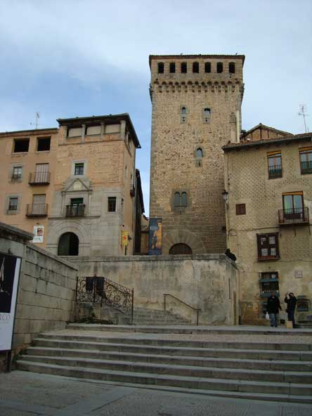

Se hizo también algo de turismo por la ciudad. Este es el Torreón de Lozoya. Construido en el Siglo XIV. Llama la atención el arco de medio punto que sirve de entrada. Está situado en una preciosa plaza, rodeado de otros importantes monumentos, como la Iglesia de San Martín o la Casa del Siglo XV.
 |